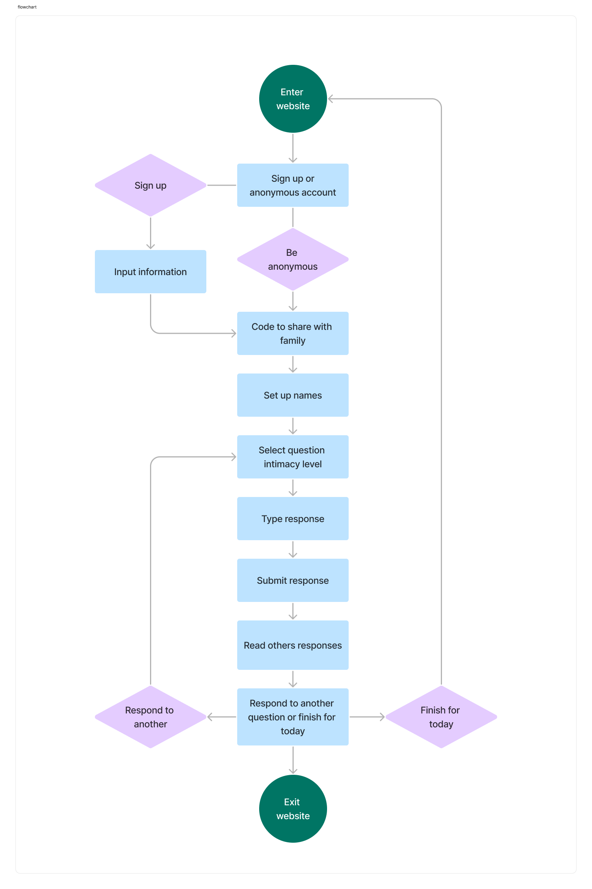
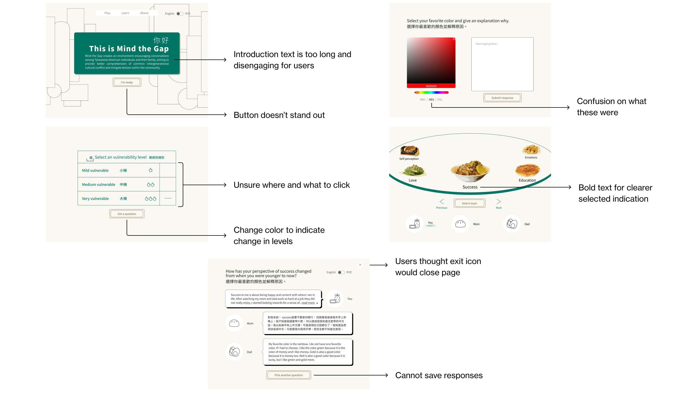
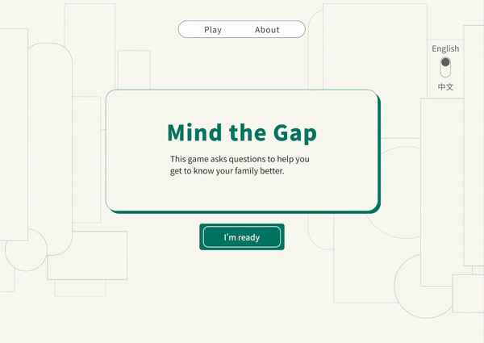
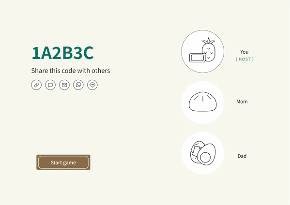
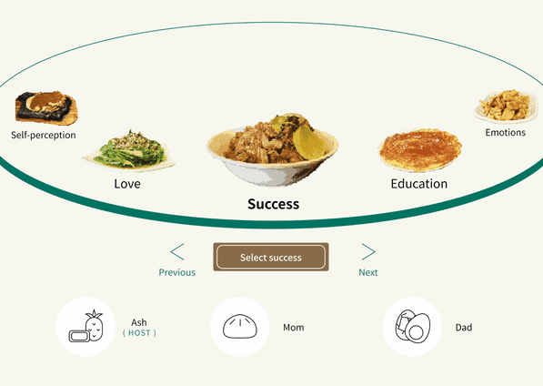
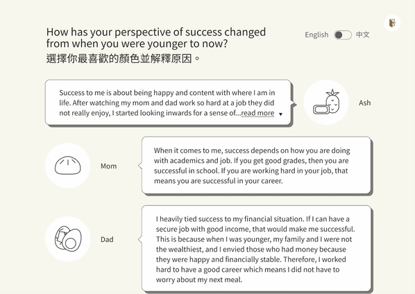

This interactive web prototype uses questions of different topics and vulnerability levels to allow first- and second-generation Taiwanese Americans better understand the each other's values, beliefs, and behaviors. Over the span of two academic quarters, I worked with UC Davis faculty to create this project.
The Problem
Many first- and second-generation Asian American families experience difficulty connecting due to children adapting to the new culture faster than their immigrant parents. However, parents who still hold on to their traditional values and behaviors expect their children to do the same. The division creates intergenerational cultural conflict, leading to diminished mental health in children, according to previous research. Taiwanese Americans are not exempt from this occurrence.
Project Goals
The objective of this interactive web project is to create an environment encouraging conversations among Taiwanese American individuals and their families, aiming to provide better comprehension of common intergenerational cultural conflict and mitigate tension within the community.
How Might I?
My project explores how I might prototype a digital interactive project available on the web to enhance the experiences associated with intergenerational communication between Taiwanese American parents and children.
User Research
I started the project by focusing on research to learn why immediate families experience intergenerational cultural conflict. I sifted through books and the online catalogue at the Peter J. Shield Library.
Literature Review
Two key points I learned which structured my approach to questions were:
Asian American Values Scale noted differences between first-generation Asian Americans and later generations in the adherence to Asian cultural values of “collectivism, conformity to norms, emotional self-control, family recognition through achievement, and humility” (Kim et al., 2005).
Asian Americans used indirect communication to protect group harmony (Leong et al., 2017) to maintain face.
Existing Applications
Getting to Know My Users
To learn about the various first-hand experiences of Taiwanese American families, I surveyed four first-generation Taiwanese American parents and interviewed nine second-generation Taiwanese American children.
✋ Uh Oh!
After compiling my interview findings, I noticed there was a misalignment of perspectives in the literature review. The written sources referenced relationships between parents and children with a negative lens. However, the interviews of second-generation Taiwanese Americans had an overall healthier relationship with their parents.
Back to the Drawing Board
Unsure and confused about the direction of the project, I drew out the Golden Circle to reorient my approach.
I realized I was struggling with solving the 'how' aspect of the problem, and decided to draw a mind map to work out the differences between conflicting findings. How can the negative experiences referenced in the literature review work with the positive ones I found in the interviews?
I noted the small similarities between the generations and key points I want to focus on in the project.
Who Am I Talking To?
Based on the literature review and interviews, I created two user personas to anchor the perspectives my project will cover.
Lina is a first-generation Taiwanese American who wants to connect with her children more.
Sarah is a second-generation Taiwanese American who wants her parents to understand her career path.
Task Flow
To synthesize the design, I created a task flow to understand the particular pages I needed to create.
Doing so helped me plan the elements I would need for each screen without spending excessive time reiterating the wireframes.

Ideation
Low Fidelity Sketches
I drew rough preliminary sketches to iterate the base designs of the interactive website. Visualizing the initial design allowed me to see how I can further develop it.
Middle Fidelity
In Figma, I planned out particular elements and features I wanted to include. I shifted away from the layered cards in the responses page because it wasn't intuitive for the user to click them.
✋ Don't Forget About Me!
After discussing with Professor Meg Quarton, I was encouraged to consider incorporating my experiences as a second-generation Taiwanese American into the project. I should take a look at how I communicate with my own family.
At this point in the project, the biggest takeaway was learning how to work with conflicting points of research. To address the loss of direction, I focused on the purpose and goal of the project, and ideated how my work could address both by utilizing information from the literature review and user interviews.
Visual Design
To relax the user, I opted for a calm visual design with minimal distractions. I wanted to maintain a clean look while evoking nostalgia through references to Taiwanese design.
Font
To follow the flow of the Traditional Chinese font, I used Noto Sans TC. This allows the Chinese and English characters to be similar to each other, suggesting continuity and connection between the two languages that are spoken between the generations. The font itself is also easily legible for header and body text.
Color
The cream color is from a Taiwanese book cover which uses natural elements, giving it a serene feeling. I used a dark gray as the text to compliment the cream color.
The emerald green and golden brown are two out of the three iconic colors listed by the Ministry of Culture of Taiwan. I included these colors to reference the natural elements and values of Taiwan.
Food Motif
The design contains an underlying food motif. Food is a communicator between generations as various dishes hold personal memories. Even consuming the same dish bonds people together with the experience and act of eating.
High Fidelity
I implemented references to food, while keeping a minimalistic design. Users should focus on the responses, so I changed the response page to display all writing. I also included a warm-up question so users experience less of a cognitive jump when they begin to answer more personal questions with their family.
User Testing
I asked a few participants to explore and complete a sample pathway of the project. Overall, the participants enjoyed the references to food and the overall visual design. As for the critical feedback, users noted the following:

Undergraduate Research, Scholarship and Creative Activities Conference
On April 26th, I presented my project at UC Davis' 35th Annual Undergraduate Research, Scholarship and Creative Activities Conference. I discussed my design with many individuals, and received comments from other second-generation Asian Americans about their relationship with their parents.
High Fidelity
Start and Share
Start the session and share the code to have your family members join.

Warm Up
Start with a light-hearted question to practice answering questions.

Pick Topic and Vulnerability
Choose a category of topics and vulnerability level for the question.

Responses
Read other family members responses to understand their perspective and hear their experiences.

Reflection
Don't overthink
Overthinking and trying to achieve perfection at every stage will do more harm than good. Iterate and keep trying different variations until you get a design that feels good to you. I spent too long trying to perfect the visual design, which held me back with my project progress.
Adaptability
What you expect and know may clash with reality and what actually happens. That's okay, you don't have to start over. Find how your conflicting materials can work with each other.